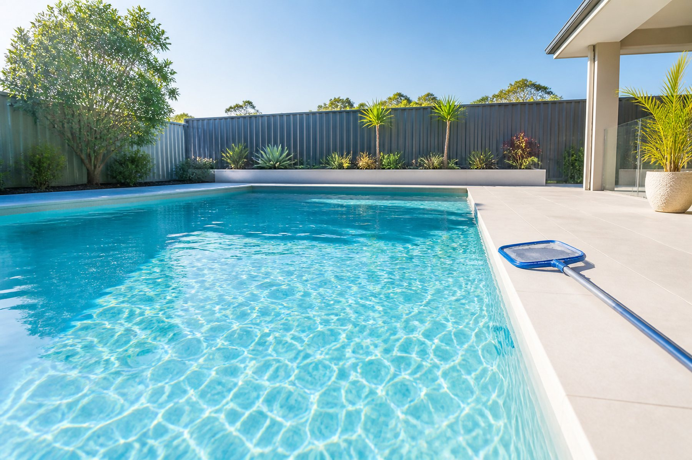

Western Australia · since 2018
Professional pool care. Renovations done properly.
Scheduled servicing, green pool recovery, equipment repairs and full renovations for pools across Western Australia.
Call Daniel — your go-to for pools 0437 283 972 · Cleaning, equipment, renovations and water testing.What we do
Four things we look after
Scheduled care, water recovery, equipment diagnosis and renovation work.
Scheduled servicing
Cleaning, water balancing and equipment checks that keep the pool swim-ready.
Green pool recovery
Algae treatment, filtration review and chemical correction to bring problem water back.
Equipment repairs
Pumps, filters, chlorinators, cleaners and system performance — diagnosed, then fixed.
Pool renovations
Surface restoration, fibreglass renovation, equipment upgrades and system assessments.
Who you're dealing with
Founded by Daniel in Perth, Western Australia
Daniel takes a technical approach to residential pool care — clear diagnosis, practical recommendations, and work aimed at the pool's long-term health rather than a quick tidy-up.
Servicing WA since 2018
Cleaning, equipment and renovation work for pools across Western Australia, building extensive industry knowledge over the years.
60+ regular pool cleans
Ongoing scheduled servicing for regular clients.
Decisions, not guesswork
We have the technology to read water chemistry, filtration, circulation and equipment condition — so every job is done knowing exactly what the pool needs.
Inspection first
Renovation and repair work starts with an inspection, so the right fix is found before anything begins.
Google reviews
What WA pool owners say
Reproduced word for word from Sunnyside's Google reviews.
Had a drama with pool pump this morning. Daniel from Sunnyside sorted it all out in a very friendly and a professional manner. Prompt and reliable service with no hidden charges. Clear communication and high quality service delivery. Thanks for those pool maintenance tips as well. You're a legend!
Daniel's knowledge and attention to detail is second to none. He recently helped get my pool back in shape with a comprehensive explanation of the do's and don'ts. If you are after a premium pool service in Perth, I wouldn't hesitate to recommend Daniel at Sunnyside.
Daniel is a pleasure to deal with. His knowledge and understanding of water chemistry and knowing what pumps and chlorinator and filter suits your pool is above average. I totally recommend Daniel for any works you require for your pool. He will go above and beyond to ensure you are a happy client.
Highly recommend Sunny Side Pools! Prompt, professional service with same-day supply and installation of a quality filter. The workmanship was excellent, and I've had zero issues since. Really happy with the product and overall experience.
Absolutely top bloke! Very knowledgeable and did exactly what we asked—no shortcuts, just solid quality work. He even went above and beyond by giving us free advice on ongoing pool care, which was super helpful. You can tell he really knows his stuff and cares about doing the job right. Highly recommend!
Sunnyside pools has been a pleasure to deal with, professional, within budget, and prompt service. Would highly recommend.
Source: reviews published on Sunnyside Pool Services' Google Business Profile, captured 8 August 2026. Quoted verbatim, in full — nothing trimmed or edited.
Pool knowledge hub
The questions Australian pool owners ask most
How often to clean a pool, why water turns green, what pH and chlorine should sit at, how filtration changes water quality — the common ones, answered in one place and checked against HealthyWA and manufacturer documentation.
Not sure what you're looking at?
Call Dan before a small problem turns into an expensive one.
Explore the knowledge hubNeed a hand with your pool?
Call Dan and quiz him on cleaning, renovations, equipment or water testing — he'll tell you what it actually needs.
Call Daniel — your go-to for pools0437 283 972 · Eight years of pool cleaning, equipment and renovation work across WA.